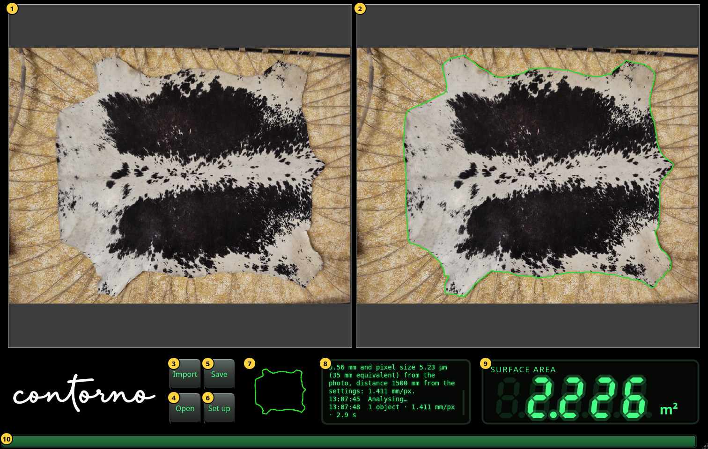
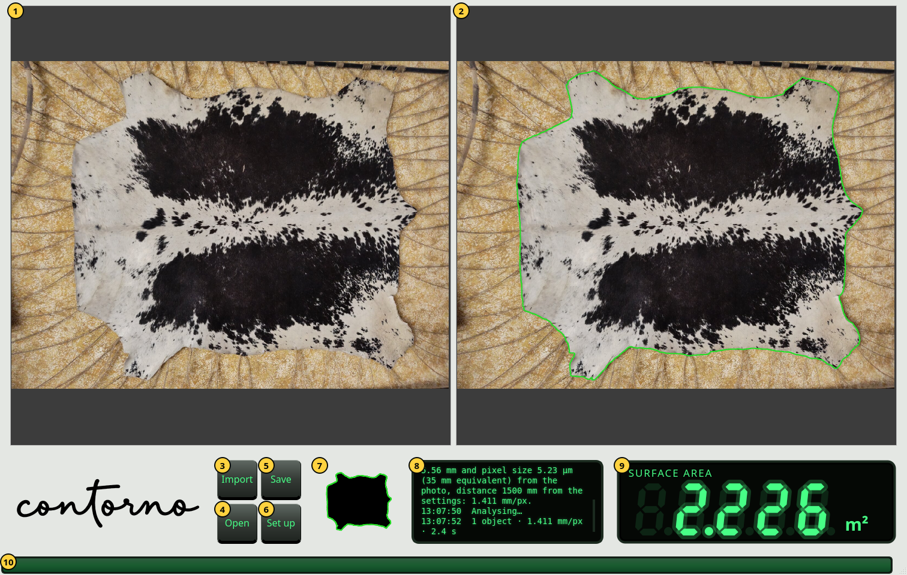

Getting started
The window, its parts, zooming and the light theme.
Open Contorno Indicator. The window fills the screen. Before the first photo the readout shows dashes and the message panel says Import a photo of the objects on the table.


- The photo as it was taken, untouched.
- The same photo with the outline found, in green. This is the outline the surface is measured inside.
- Import — choose a photo of the object on the table. Its analysis starts at once.
- Open — show a saved inspection again. See Save and open inspections.
- Save — keep the photo, the camera, the outline and the surface in one zip file.
- Set up — the camera, the language and the theme. See Set Up.
- The mask: the object as the analysis sees it, black, with its outline in green.
- The message panel. Each line starts with its time. It says what was imported, where the scale came from, how many objects were found and how long it took.
- The readout: the surface inside the outline.
- The busy bar. It moves while the photo is analysed and stays full for a second when the result is in.
Zoom and scroll
Turn the mouse wheel over a photo to zoom in or out at the pointer. Drag to scroll. Both photos zoom and scroll together, so the outline on the right always sits over the same place as the photo on the left. A new photo is shown whole again.
The readout
The readout shows the surface in cm² below 0.1 m² (one decimal, for example 125.4 cm²) and in m² from 0.1 m² on (three decimals, for example 2.226 m²). When a new value arrives the digits count to it from the one before.
- Dashes: no photo yet, or the analysis failed. The message panel says why.
- Dimmed digits: the value of the previous photo while the new one is analysed. A dimmed number is never the current result.
- Bright digits: the surface inside the outline shown on the right.
The light theme
The window is black by default. The theme key in Set Up turns the panels light grey with a black wordmark; the photos do not change.

